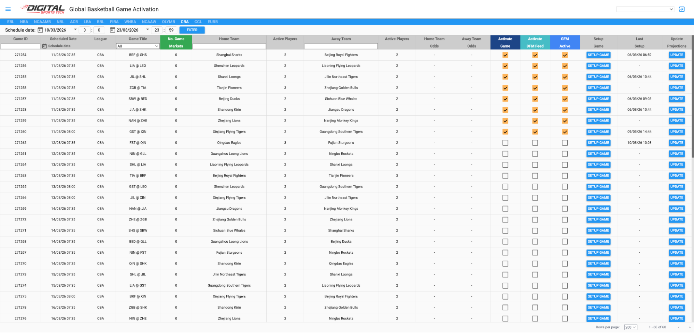
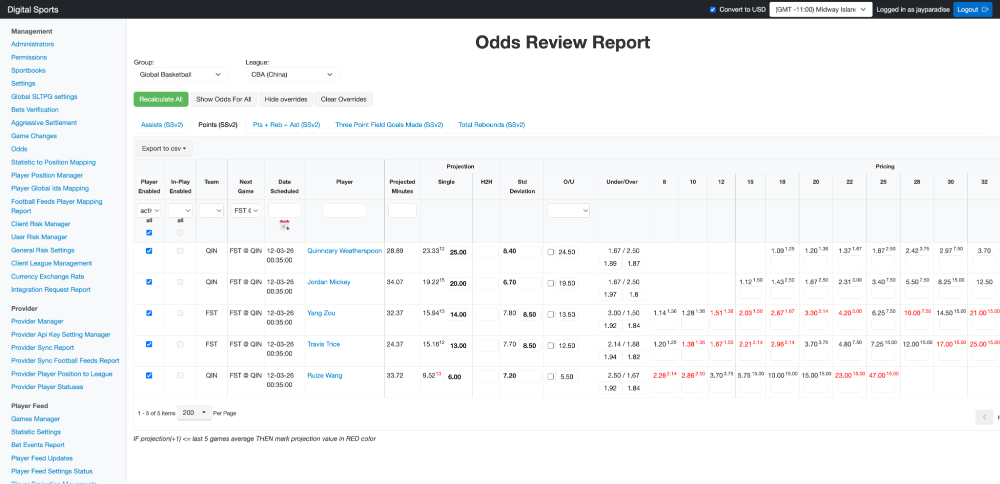

Global Basketball Projection System
Game Activation Report: https://tt-us-x234525.digitalsportstech.com/#!/ttv2/global-basketball-game-activation
- To set a game up, click the setup game button and it will take about a minute to run.
- This is pulling in our projections from our new projection model and inserting them into the ORR as override.
- It also populates O/U lines but we aren't activating those right now.
- Once completed, go into ORR and select which players you want active for the game.
- This shouldn't change much game to game for each team. It should be the top 2-3 players per stat for each team for now.
- Manually adjust player std dev and projections if there are lots of red prices.
- If you feel a player's projection looks way off based on the last 5-10 games, please alert us so we can check on it.
- Set the game live. You can do it through the global basketball league report or the PL report.

